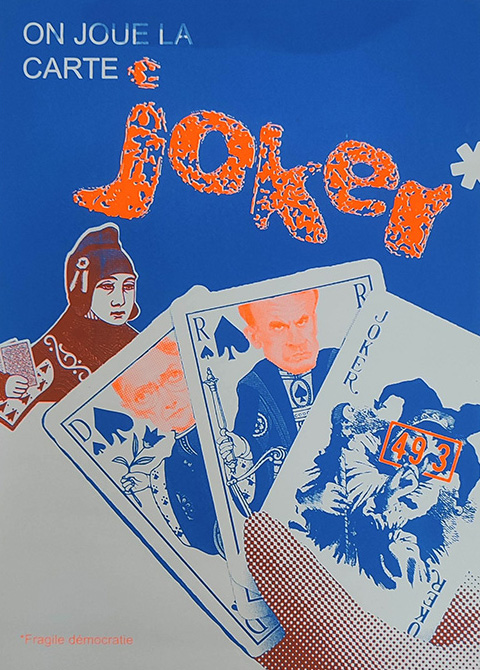

Ce projet avait pour objectif d’expérimenter la sérigraphie, à travers la création d’une affiche politique à caractère satirique. L’enjeu était de prendre position, de développer un message percutant et de le traduire visuellement à l’aide de Photoshop. Le projet imposait le réalisation en bichromie, dont l’une des couleurs devait être fluorescente, pour renforcer l’impact visuel et le côté provocateurde l’affiche. Ce travail a permis d’explorer les possibilités graphiques et techniques de la sérigraphie, tout en abordant des thèmes engagés.
TECHNIQUES D'IMPRESSION
ON JOUE LA CARTE JOKER
